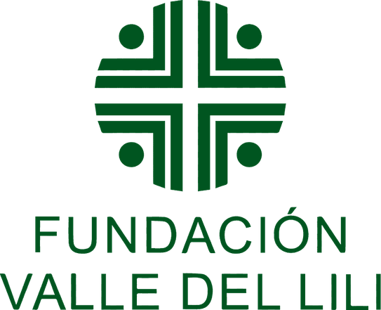

Análisis de normatividad
Gestión Clínica · GrisData
Presentación y análisis de la normatividad vigente del sector salud, para socializarla con los diferentes equipos de trabajo.
1Temas
Análisis del Proyecto de Circular SISMED
Análisis del proyecto de circular sobre el Sistema de Información de Precios de Medicamentos (SISMED) de la Comisión Nacional de Precios de Medicamentos y Dispositivos Médicos.
Abrir tema →